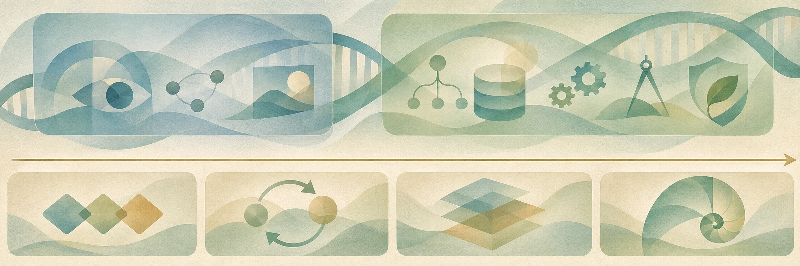
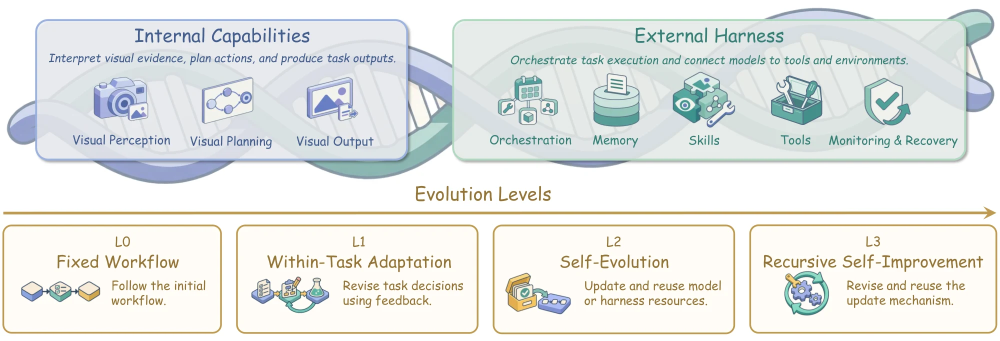

Task performance
Measure the quality of a result, trace how the agent reached it, or test recovery after an error.
A survey on visual agents
Toward Recursive Self-Improvement
1 SUFE2 MBZUAI3 UCL4 Xiamen University5 Fudan University

The survey
A visual agent combines one or more models with a harness that coordinates reasoning, memory, skills, and tool use. The survey traces what experience changes, how long the change persists, and where it is used next.

Taxonomy
Compare a fixed workflow with three levels of experience-driven change, from a revised action in the current task to a revised updater that shapes later rounds.
Feedback changes what the agent sees, plans, or does during the current task.
Evaluation
Compare what different protocols measure, from immediate task performance to the effects of retained resources and revised improvement mechanisms.
Measure the quality of a result, trace how the agent reached it, or test recovery after an error.
Evaluate acquisition, retention, and transfer after a model or harness resource changes.
Trace the revised updater into a later update and compare it with the original under matched budgets.
Research outlook
Preserve transferable visual knowledge and execution strategies while learning new tasks, object configurations, and environments.
Use independent evaluations and task-specific authorization to tell genuine capability gains from behavior that exploits an objective.
Track evidence for task milestones and revisit plans when new observations undermine earlier state assumptions.
Trace revisions through successive updates and compare original and revised updaters with matched experience and budgets.
Pair task outcomes with component tests and controlled interventions to assess the contribution of individual harness components.
The literature
Search the survey bibliography and filter by publication year, venue, or the section where a work is cited.
Citation
Manuscript citation.
@unpublished{chen_visual_agents,
title = {Seeing the Harness and Self-Evolution of Visual Agents:
Toward Recursive Self-Improvement},
author = {Chen, Dong and Ge, Shuai and Fu, Yu and Ren, Xiangyu
and Zhang, Zhihao and Wang, Hao and Wang, Changshuo
and Ji, Jiayi and Ding, Henghui and He, Shuting},
note = {Manuscript}
}